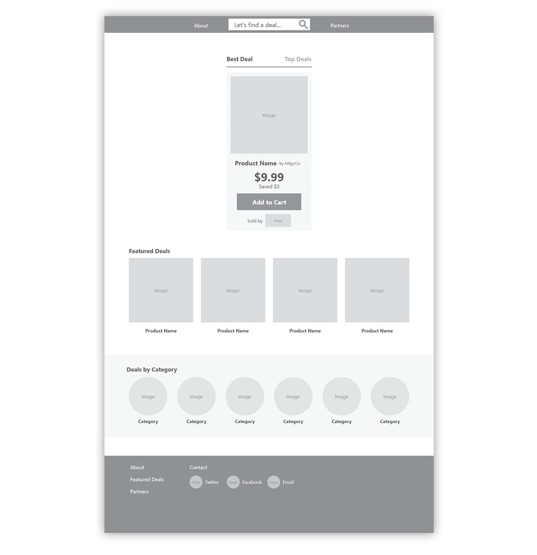
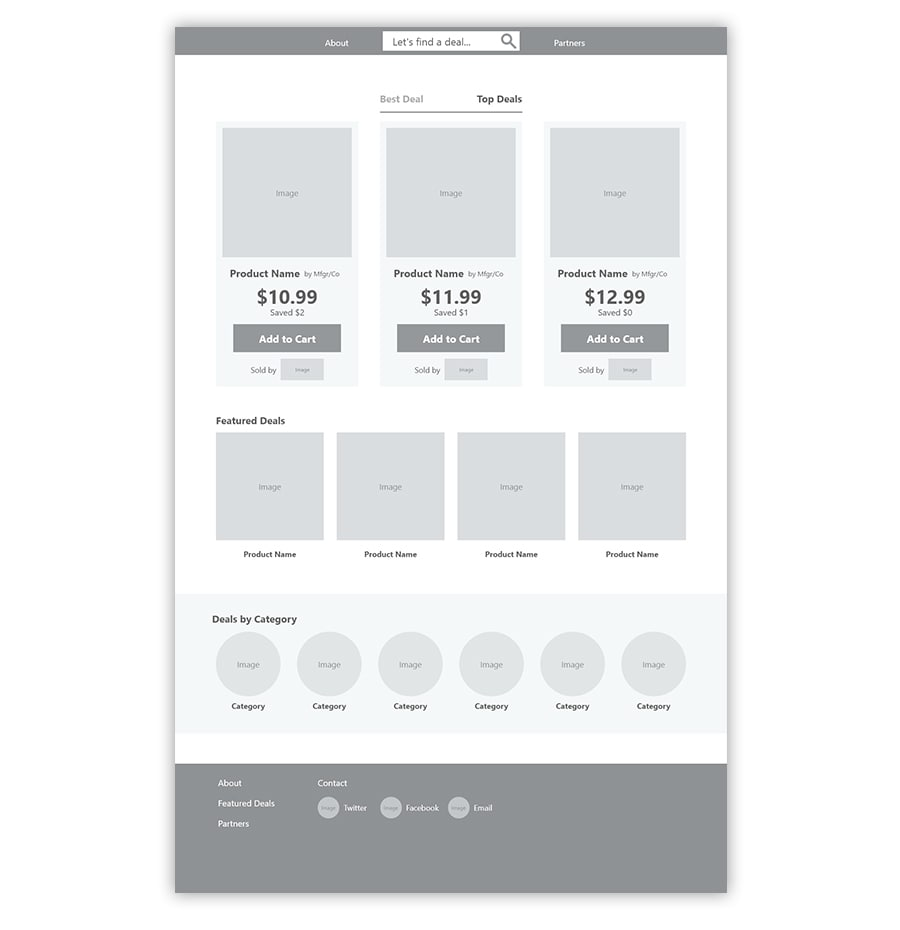
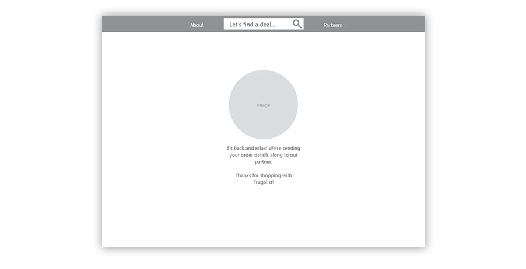
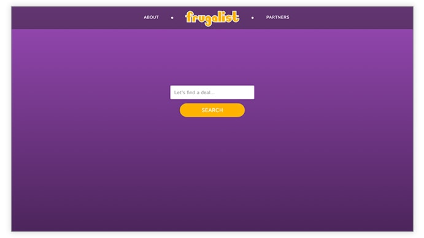
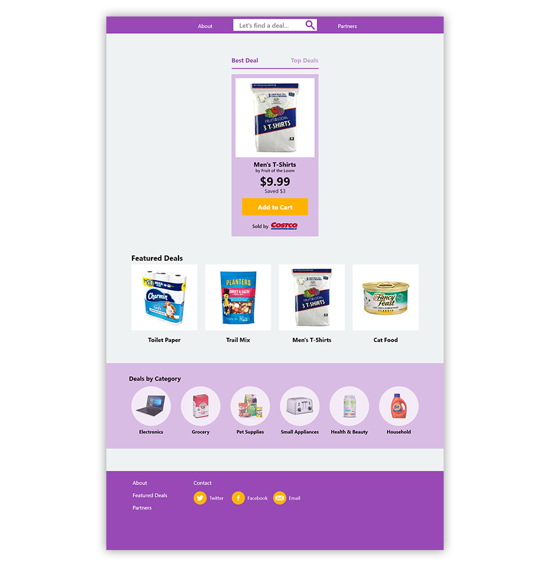
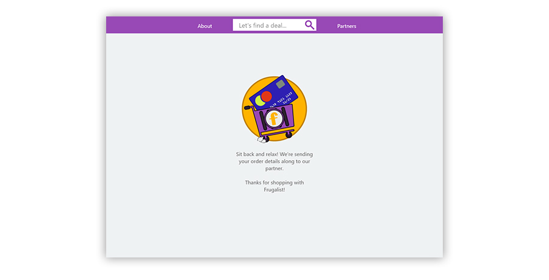
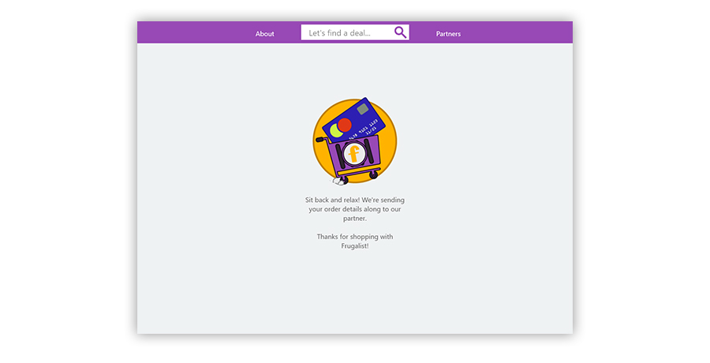

A client approached me with an idea and a rather simple one: find the best and cheapest deals for any product online, guaranteed. Based on an affiliate model, Frugalist would become a quick and easy portal for online shoppers to search for only the best deals on household appliances, electronics, groceries, you name it!
The only catch was the mandate that customers never be hassled with confusing filters or endless options – just simply help them find a deal and send the order along to the retailer.
Once again, I developed this project with guidance from Sprint, How to Solve Big Problems and Test New Ideas in Just Five Days. With the aid of some quick sketches, brainstorming sessions, and a bit of competitive research I rendered high-fidelity mock-ups and a demo website.
Some of the tools I utilized in the development of Frugalist included:
Given that Frugalist needs little more than to facilitate a product search and accept some form data mapping the purchasing process from end to end was straightforward.
My goal for the week was to build the Frugalist “shopping experience” – the basic product search, payment, and shipping forms. The behind-the-scenes magic of encapsulating form data and redirecting users to the respective affiliate was, of course, beyond the scope of this project.
My first sketches were of Frugalist’s closest competitor, PriceGrabber.com. The site features popular product categories, promotions for the site’s weekly deals newsletter, and the product search field.
Although the components and options on the site are few and far between there seems to be a significant amount of repetition in function. That is, the first page users are confronted with offers multiple options for categorical search represented as tiles, icons, and drop-down menus.
As I began to sketch my thoughts out on paper my mind wandered among page layout concepts, search results, and relevant product text to display. Even though Frugalist was bound to be modest in its overall appearance my sketches required no less thought than a more complicated design. Considerations for vital product information, like price, savings, and retailer were extremely important.
The Crazy 8’s brainstorming sessions proved useful toward coming up with direct messaging and copy in addition to a few variations on product display.

Next, I put together a storyboard depicting the service that Frugalist would provide. Though a simple search followed by a result and a bit of product detail would certainly satisfy the bare minimum I wanted to convince users they were, in fact, getting the best deal. Finding a way to accomplish this was my chief objective for the storyboarding exercise.

So, I decided the simplest solution was to split search results in two – the best deal and the top three or so. The assumption here being that offering a comparison of results users would be more committed to making a purchase.
When it came time to write the user flow it was apparent most of the work was already done. After all, Frugalist’s mandate was to showcase the best deal (or deals) and proceed toward purchase – nothing more, nothing less. The flow I concocted didn’t deviate far from those simple principles.
Perhaps the only real addition to the process of searching, selecting, and bundling up purchasing details was the about page. Given the circumstances, I thought a brief introduction might help clarify how the site works to bring only the top deals to the user.
Now that I’d assembled a reasonably simple user flow I put together equally simple wireframes. Aside from rendering the search, purchase form, search results, and back button functionality into the wireframes I needed to devise a simple and effective information hierarchy for the product details and call to action on each page.
Of tantamount importance, however, was not making the user, i.e., shopper, think about what they’re about to purchase. Based upon my previous competitive analysis, it seemed common practice to include the minimum of information such as price, savings, and retailer. In keeping with the user flow, the back button and results filters provide the user with a sense of control over their Frugalist shopping experience.
 The payment form and redirect pages were relatively straightforward to produce and I included only as much information as required.
Perhaps the single most important element I needed to address in the mock-ups was the product detail card. After all, users needed an incentive to buy and making the case for savings without overburdening them with information seemed a logical path toward implying that incentive.
In contrast to the wireframes, I put greater emphasis on the product title, price, and, of course, the checkout button. Although displaying the cost savings and retailer information was warranted, making the item title and price more prominent is what shoppers find most relevant based upon my previous research.
 

Next up for the Frugalist project is more usability testing with existing wireframes and mock-ups. Once sufficient data has been tabulated, then code the demo website for a more immersive experience of Frugalist.